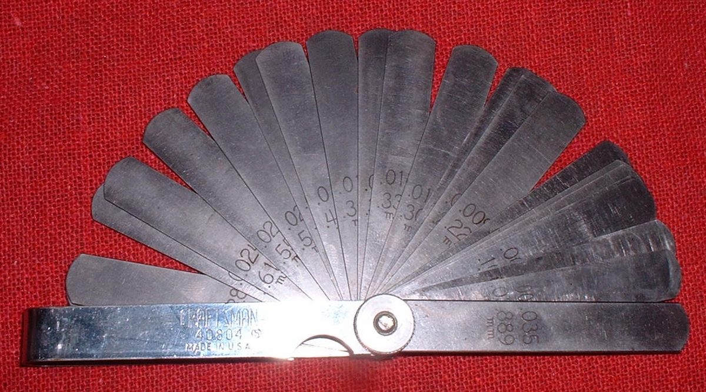
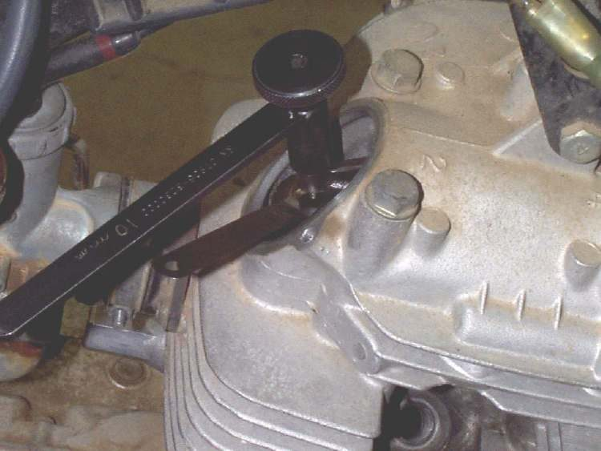
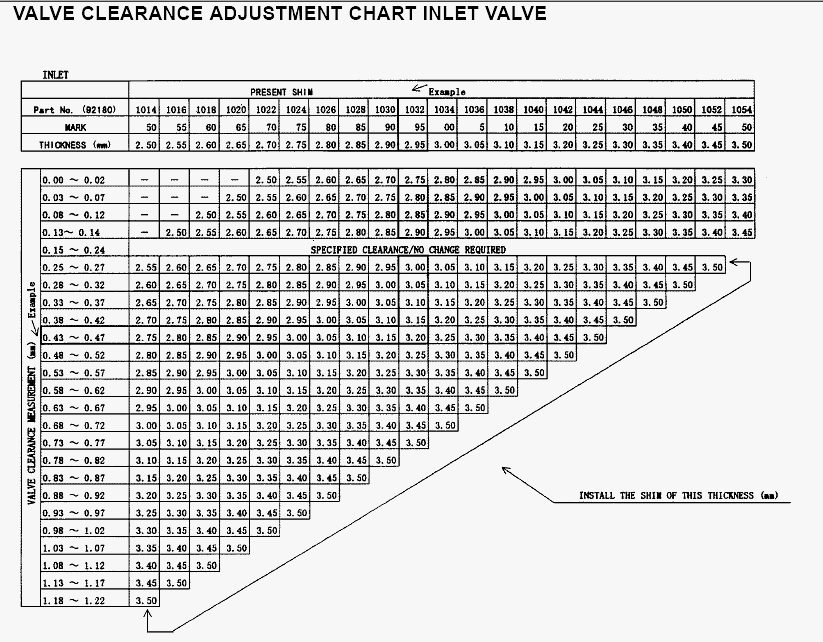
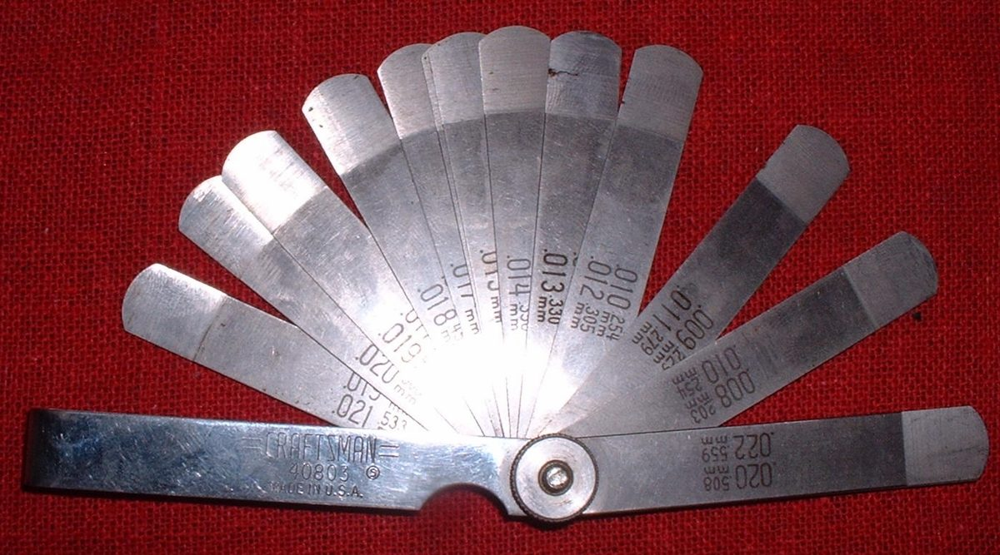
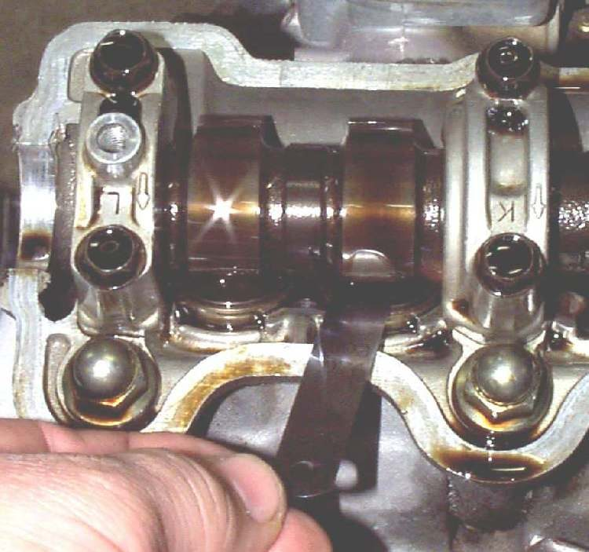
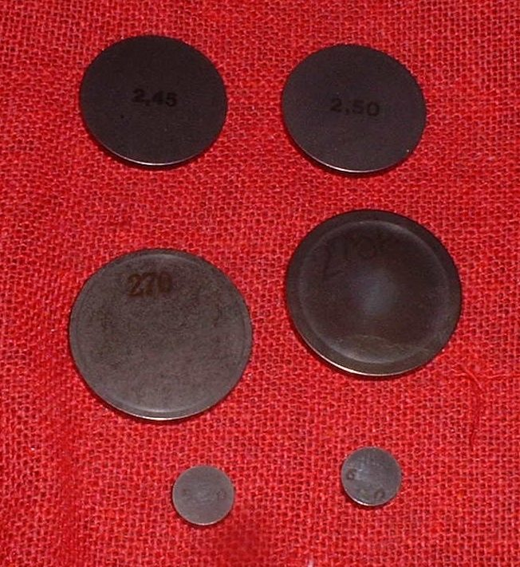

A light, regular tick from the cylinder head that follows engine speed is most often the valve clearance (the small gap between rocker and valve) being too large. It can also be an exhaust leak at the head, a loose spark plug, or on overhead cam engines the cam chain. A light tick is normal on many engines with screw adjusters. A tick that gets louder, or a new sound after work on the engine, needs checking.
Is it safe to ride?
Usually yes, gently, for a short distance. Stop if the tick turns into a knock, a clatter or a loss of power.
Quick checks first
- Is the oil level correct? Low oil makes the top end noisy.
- Is the spark plug tight? Touch the plug cap; a loose plug puffs and ticks.
- Is the exhaust nut at the head tight? Look for soot streaks at the port.
- When did it start: after a service, a long ride or a fall?
- Set and check valve clearance with a cold engine. Metal grows as it warms, so a hot reading is wrong.
Diagnose it step by step
1Is the oil level between the marks?
- No: top up with Check the engine oil level, run the engine and listen again. If the tick has gone, find out why the level was low: Oil level drops but there is no visible leak.
- Yes: go to step 2.
2With the engine idling, hold a long screwdriver handle to your ear and the tip on the head near the valve caps, then near the exhaust port. Where is it loudest?
- At the exhaust port or along the pipe, with a puffing feel: go to Ticking or puffing from an exhaust leak.
- At the valve caps or head cover: go to step 3.
- Lower down on the cylinder, or a heavier knock: go to step 6.
3Is the tick at half engine speed, light and metallic, and does it stay the same when warm?
- Yes: this is typical of valve clearance. Go to step 4.
- No, it is a fast rattle loudest at idle on an overhead cam engine: go to Rattling noise from the cam chain area. (The K-Light 125 is a pushrod engine with no cam chain.)
4Check the clearance cold with Check and adjust valve clearance. Was one or both gaps larger than the manual value?
- Yes: set it. Ride and listen. If the tick is gone or much quieter, the job is done.
- No, the gaps were correct: go to step 5.
5Did the gap close up again quickly, or was a rocker very loose or worn?
- Gap closes up: the valve is sinking into a worn seat. Low compression may follow. Go to Assess the top end (cylinder, piston, valves).
- Rocker or pushrod worn, or a valve spring broken: workshop. The K-Light manual lists wrong valve clearance and a damaged valve spring as the causes of head noise.
6Is it a rattle on acceleration that goes when you ease off?
- Yes: this is pinking (detonation), not the valves. Go to Pinging or rattling sound when accelerating (pinking).
- No, it is a knock when cold: go to Knocking from the cylinder when cold that fades when warm.
Causes, most likely first
| Cause | How to confirm | Fix |
|---|---|---|
| Valve clearance too large | Feeler gauge at TDC, cold | Check and adjust valve clearance |
| Low oil | Dipstick or sight glass | Check the engine oil level |
| Exhaust leak at the head | Soot at the port, puffing | Find and fix an exhaust leak |
| Loose spark plug | Plug turns by hand | Remove, check, gap and fit a spark plug |
| Cam chain slack (OHC only) | Rattle at idle near tensioner | Check the cam chain and tensioner |
| Worn rocker, pushrod, cam or broken spring | Noise remains with correct gaps | Assess the top end (cylinder, piston, valves) |
| Clearance too large on a shim-type engine | Feeler gauge cold, reading above the manual range | A thinner shim. Shims can be swapped between valves to save buying new ones |
Reference values (K-Light 125)
| Item | Value | PDF page |
|---|---|---|
| Valve clearance, inlet and exhaust, cold | 0.05 to 0.07 mm | 202 |